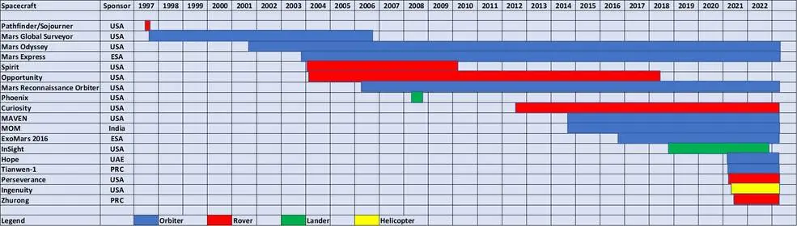
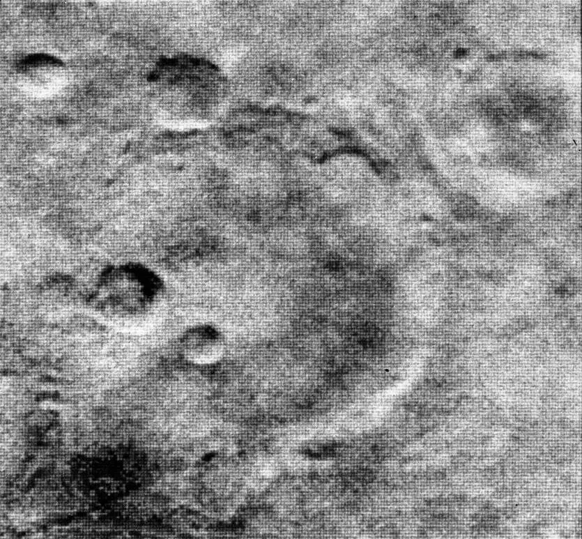
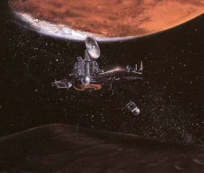
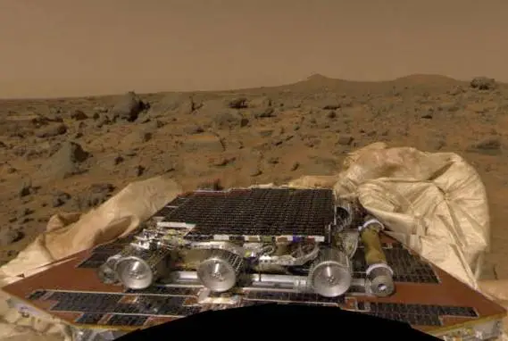
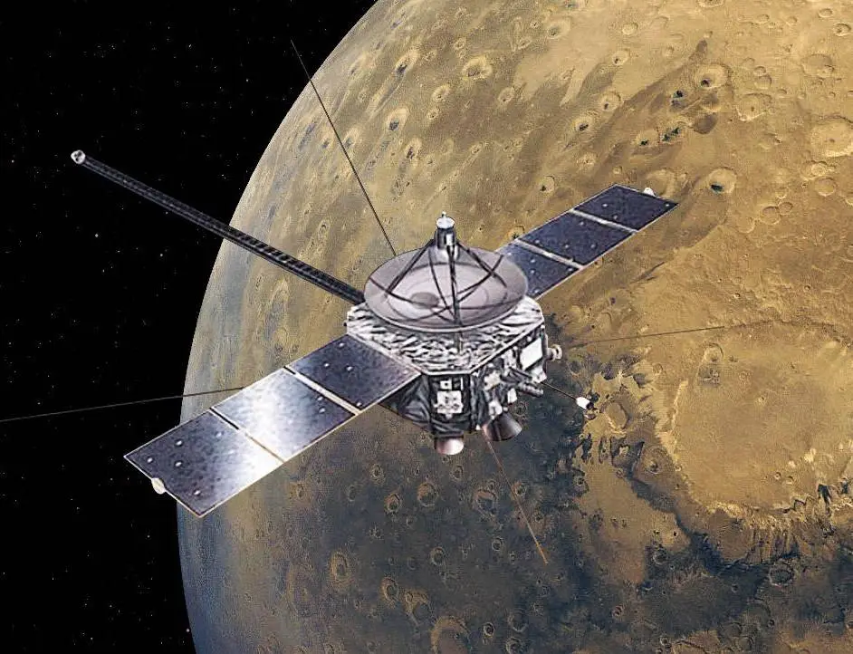

The first three decades (1965 to 1996) of Mars exploration consisted of periodic forays to the Red Planet, dictated by the availability of suitable launch windows every 26 months. The first few spacecraft completed their observations in the few hours of a quick planetary flyby, followed by months of observations by orbiters, and culminating in the longest continuous observation by a lander lasting six years. On July 4, 1997, a new era of continuous robotic scientific exploration of Mars began, with at least one spacecraft operating at all times, either on the surface or in orbit around the planet. Today, an international array of 13 spacecraft – one stationary lander, eight orbiters, three rovers, and one helicopter – continuously adding to our knowledge of the Red Planet.

The first phase of Mars exploration recorded more failures than successes. Of the 26 attempts to reach Mars between 1960 and 1996, only 12 met with partial or full success. Between 1960 and 1969, the Soviet Union attempted to send eight spacecraft to Mars. Only two, Mars 1 and Zond 2, made it to interplanetary space, and controllers lost contact with both long before they reached Mars. The first successful Mars mission, Mariner 4, surprised many scientists when, during its flyby on July 14, 1965, it returned 22 black-and-white images showing a cratered lunar-like terrain, seemingly dashing hopes for a possibly habitable world. Mariner 4 had a less well-known twin, Mariner 3, that due to a faulty payload shroud that prevented its solar panels from deploying, lost out on being the first spacecraft to explore Mars. That failure, along with the string of failed Soviet probes to Mars, led engineer John R. Casani at NASA’s Jet Propulsion Laboratory in Pasadena, California, to jokingly come up with the idea of the Great Galactic Ghoul, a mythical space monster that preyed on unsuspecting spacecraft on their way to the Red Planet. In 1969, as Mariner 7 approached the planet for its flyby, ground controllers suddenly lost contact with it. At first they jokingly feared a ghoul attack, but the spacecraft resumed communications and completed a successful mission along with its twin, Mariner 6.

The 1970s were a little kinder to the Soviet Union. Six of their seven missions achieved partial successes with a series of flybys, orbiters, and landers. In 1971, the United States’ plan to send two orbiters to map the planet’s surface in detail suffered a setback when the first, Mariner 8, fell victim to a launch failure. But its twin, Mariner 9, became the first spacecraft to orbit another planet on Nov. 13. It continued to operate until October 1972, mapping 85% of the planet to a resolution sufficient for scientists to select landing sites for the next two spacecraft, Viking 1 and 2, that arrived at Mars in the summer of 1976. Each Viking spacecraft consisted of an orbiter and a lander, the latter equipped with sophisticated instruments to test for signs of life in the Martian soil. While the results of those experiments remain inconclusive, all the Viking spacecraft far exceeded their operational lives, conducting the first detailed investigations from Mars’ surface.

A six-year hiatus in Mars exploration followed after the last of the Vikings stopped working (the Viking 1 lander, on Nov. 11, 1982). When attempts resumed, the Great Galactic Ghoul made its presence felt. The Soviet Union launched a pair of spacecraft called Phobos 1 and 2 in July 1988 to orbit Mars and deploy landers and a hopper on the planet’s larger moon Phobos. Ground controllers lost contact with Phobos 1 on Sept. 2 while still en route to Mars, due to an erroneous command sent to the spacecraft. Phobos 2 successfully entered orbit around Mars on Jan. 29, 1989, and returned 37 detailed images of Phobos, mapping 80% of the moon. Shortly before the deployment of the lander and hopper, the main computer aboard Phobos 2 failed, and the mission ended prematurely on March 27. In 1992, NASA launched the Mars Observer orbiter, the agency’s first mission to Mars since the Viking spacecraft. Controllers lost contact with the spacecraft three days before its planned orbital insertion burn on Aug. 24, 1993. Engineers believe a faulty valve caused the buildup of fuel and oxidizer vapors that exploded when the spacecraft’s engine ignited for a course correction. Mars 96, Russia’s only attempt to reach Mars in the 1990s, launched on Nov. 16, 1996. The ambitious spacecraft to study the Martian atmosphere, its surface, and its interior consisted of an orbiter, two small landers, and two surface penetrators. Failure of the rocket’s upper stage to reignite left the spacecraft in low-Earth orbit, reentering Earth’s atmosphere soon after.

A new era of continuous Mars exploration began with the airbag-assisted soft-landing of the Mars Pathfinder on July 4, 1997, the first Mars landing in 21 years. Since that day, at least one spacecraft has studied Mars, either from its surface or from orbit. For much of the past 25 years, multiple spacecraft have carried out coordinated studies to vastly improve our understanding of the Red Planet. Designed as a technology demonstration mission, Pathfinder deployed the 23-pound Sojourner rover, the first wheeled vehicle to operate on the Red Planet. For the first time in the planetary program, the public could access the data and especially the images coming in from Mars essentially in real time through a new medium called the Internet. Pathfinder ceased operations on Sept. 27, 1997, but by that time the Mars Global Surveyor (MGS) had arrived, entering an elliptical orbit around Mars on Sept. 12. It operated in orbit for more than nine years, conducting its primary mapping mission, returning more than 240,000 images of Mars, and also supporting the Spirit and Opportunity rovers on the surface following their arrival in January 2004.

The Great Galactic Ghoul had another feast, hopefully its last, in 1999. Japan’s Nozomi spacecraft planned to enter orbit around Mars in October 1999 to study the planet’s atmosphere. Excessive use of fuel earlier in the mission left it without enough propellant to enter its proper trajectory. It instead flew by Mars on Dec. 14, 2003. NASA’s next attempts to reach Mars involved the Mars Climate Orbiter (MCO) to study the Martian atmosphere in detail, and the Mars Polar Lander designed to look for water ice in the planet’s southern polar region. As the orbiter passed behind Mars for its orbital insertion maneuver on Sept. 23, 1999, controllers lost contact 49 seconds earlier than expected. A confusion between metric and English units in the navigation system resulted in MCO being much too low in Mars’ atmosphere for the insertion burn. Controllers never regained contact with the spacecraft, as it either burned up in the atmosphere or ricocheted off the atmosphere. On Dec. 3, the Mars Polar Lander (MPL) arrived at Mars. In addition to attempting a soft landing in Mars’ south polar region, MPL also deployed two identical impactor probes called Deep Space 2A and 2B, intended to penetrate the Martian surface and study the subsurface composition to a depth of one meter. As MPL separated from its cruise stage to begin its entry, descent, and landing, all contact ceased. Following expected touchdown, ground controllers could not reestablish communications, and it is believed MPL crashed on the surface. Controllers also could not establish contact with the two Deep Space probes after they entered the atmosphere.